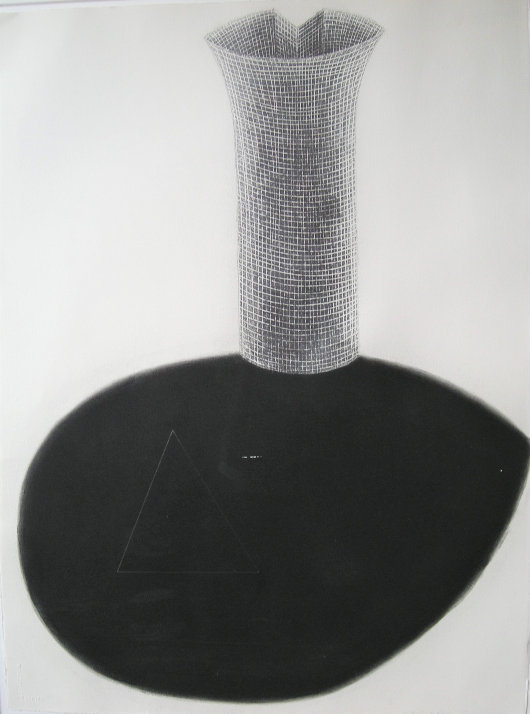

Osi Audu
b.1956
Artist Biography
Osi Audu was born in 1956 in Nigeria and studied art at the University of Ife, Ife-Ife in Nigeria before doing a masters at the University of Georgia in the United States. He resides in New York and describes his works as being ‘compositions impacted by the abstract geometric possibilities he sees in African art and cultural objects and the concept of the head as a centre of waking and dreaming consciousness’. Audu’s work was exhibited at the Gwangju Biennale in South Korea in 1995 and as part of the Venice Biennale in 2015 and he has contributed to numerous group shows in the United States, Britain, Japan, Germany and elsewhere. Major public institutions holding his work include the Smithsonian National Museum of African Art in Washington, the British Museum, Nigerian High Commission in London and the National Gallery of Art, Lagos.

Untitled, 1997